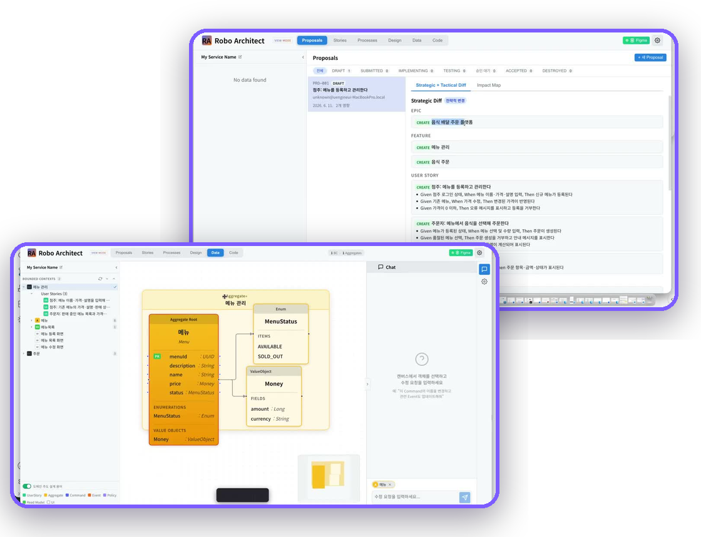

문서에서 지식 그래프를 자동으로 구축하는 오픈소스 온톨로지 스튜디오
Ontology Studio는 어떤 도메인의 문서든 업로드하면, 구축 의도와 Golden Question에 따라 온톨로지 스키마를 스스로 설계하고 엔티티·관계를 추출해 Neo4j 그래프에 적재합니다.
벡터 검색이 놓치는 조항 간 연결관계까지 그래프로 탐색하여 근거가 명확한 정확한 답변을 제공하며, MCP 서버로 Claude, Process GPT 등 어떤 AI 에이전트와도 연동됩니다. 특히 Process GPT 에이전트는 이 온톨로지를 '지식지도' 삼아 업무 중 실시간으로 탐색합니다.
주요 기능
Process GPT 에이전트의 '지식지도(Knowledge Map)'
Ontology Studio로 구축한 온톨로지는 Process GPT의 AI 에이전트가 업무를 수행할 때 참조하는 '지식지도'가 됩니다. Process GPT의 딥 에이전트는 프로세스 실행 중 MCP(ontology_query)로 법령·규정 지식그래프를 탐색하여 근거 조항을 인용하고, 온톨로지에 명시된 지식에 기반해서만 판단하므로 환각(Hallucination) 없는 신뢰성 있는 업무 자동화가 완성됩니다. 두 제품을 함께 쓰면 문서 → 지식그래프 → 에이전트 실행으로 이어지는 조직 지식의 선순환이 만들어집니다.
동작 방식
문서 업로드부터 질의응답까지, 온톨로지 구축의 전 과정을 자동화합니다
1. 문서 & 의도 입력
2. 스키마 자동 설계
3. 그래프 적재
4. 검증 & 질의
Graph RAG vs 벡터 검색
| 특성 | Ontology Studio (Graph RAG) | 일반 벡터 검색 RAG |
|---|---|---|
| 검색 방식 | 그래프 탐색으로 연결된 조항까지 추적 | 유사도 상위 청크만 개별 검색 |
| 문맥 연결성 | 조항 간 관계를 빠짐없이 확보 | 청크 간 관계 파악 어려움 |
| 근거 제시 | 참조 노드·출처를 명시적으로 제공 | 출처 추적이 제한적 |
| 정확도 | 구조화된 지식 기반의 높은 정확도 | 누락·환각 가능성 상대적으로 높음 |
| 스키마 구축 | 문서로부터 자동 설계 & 자가 개선 | 스키마 개념 없음 |
| 에이전트 연동 | MCP로 표준 연동(Claude 등) | 별도 통합 필요 |
Robo Architect 연동
설계와 구현으로 이어지는 지식지도
Ontology Studio가 구축한 도메인 지식 그래프는 Robo Architect의 설계·구현 에이전트가 참조하는 지식지도가 됩니다. 문서에서 추출한 개념과 관계가 Aggregate·도메인 이벤트 설계의 근거가 되어, AI가 도메인을 정확히 이해한 채 코드를 생성합니다.
두 제품은 서로 자유롭게 오갑니다 — Ontology Studio의 지식을 Robo Architect의 명세로 잇고, Robo Architect가 설계한 모델을 다시 그래프로 축적합니다. 지식과 명세가 한 궤도에서 순환합니다.

지금 바로 시작하세요!
Ontology Studio는 오픈소스로 제공됩니다. 문서만 준비하면 나만의 지식 그래프를 손쉽게 구축할 수 있습니다.
Docker 또는 로컬 실행을 지원합니다.